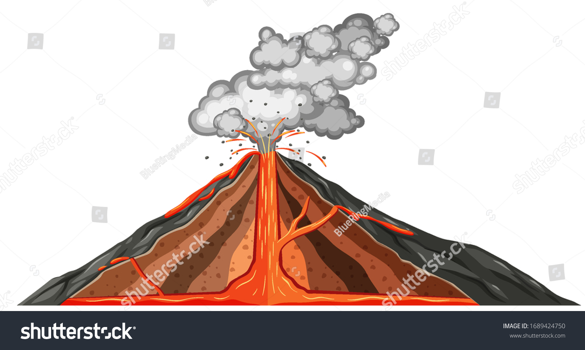

Stratovolcanoes
Volcano, vent in the crust of Earth or another planet or satellite, from which issue eruptions of molten rock, hot rock fragments, and hot gases. A volcanic eruption is an awesome display of Earth’s power. Yet, while eruptions are spectacular to watch, they can cause disastrous loss of life and property, especially in densely populated regions of the world.
Sometimes beginning with an accumulation of gas-rich magma (molten underground rock) in reservoirs near Earth’s surface, they can be preceded by emissions of steam and gas from small vents in the ground. Swarms of small earthquakes, which may be caused by a rising plug of dense, viscous magma oscillating against a sheath of more-permeable magma, may also signal volcanic eruptions, especially explosive ones.
In some cases, magma rises in conduits to the surface as a thin and fluid lava, either flowing out continuously or shooting straight up in glowing fountains or curtains. In other cases, entrapped gases tear the magma into shreds and hurl viscous clots of lava into the air. In more violent eruptions, the magma conduit is cored out by an explosive blast, and solid fragments are ejected in a great cloud of ash-laden gas that rises tens of thousands of metres into the air. One feared phenomenon accompanying some explosive eruptions is the nuée ardente, or pyroclastic flow, a fluidized mixture of hot gas and incandescent particles that sweeps down a volcano’s flanks, incinerating everything in its path. Great destruction also can result when ash collects on a high snowfield or glacier, melting large quantities of ice into a flood that can rush down a volcano’s slopes as an unstoppable mudflow. (See the table of the world’s major volcanoes by region.)

Sometimes beginning with an accumulation of gas-rich magma (molten underground rock) in reservoirs near Earth’s surface, they can be preceded by emissions of steam and gas from small vents in the ground. Swarms of small earthquakes, which may be caused by a rising plug of dense, viscous magma oscillating against a sheath of more-permeable magma, may also signal volcanic eruptions, especially explosive ones.
In some cases, magma rises in conduits to the surface as a thin and fluid lava, either flowing out continuously or shooting straight up in glowing fountains or curtains. In other cases, entrapped gases tear the magma into shreds and hurl viscous clots of lava into the air. In more violent eruptions, the magma conduit is cored out by an explosive blast, and solid fragments are ejected in a great cloud of ash-laden gas that rises tens of thousands of metres into the air. One feared phenomenon accompanying some explosive eruptions is the nuée ardente, or pyroclastic flow, a fluidized mixture of hot gas and incandescent particles that sweeps down a volcano’s flanks, incinerating everything in its path